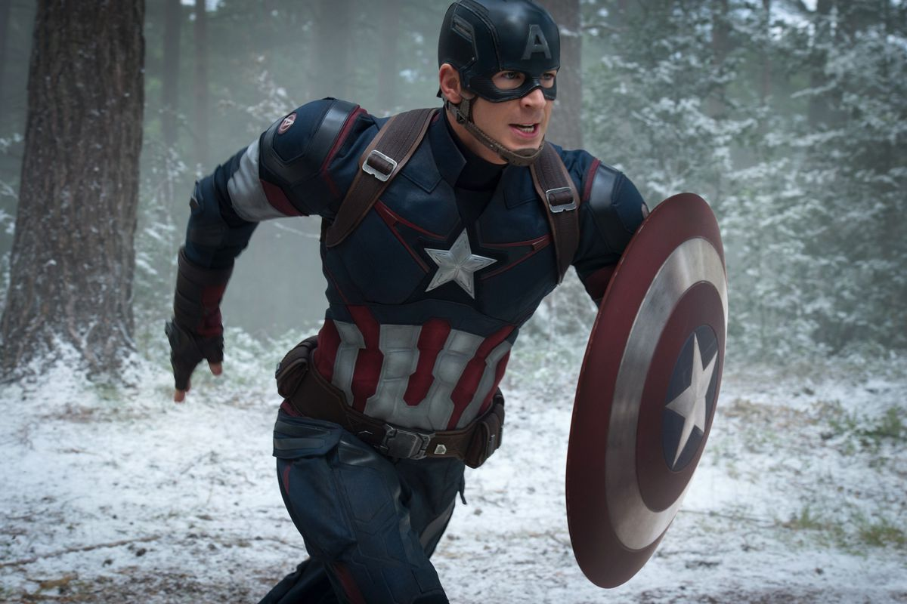
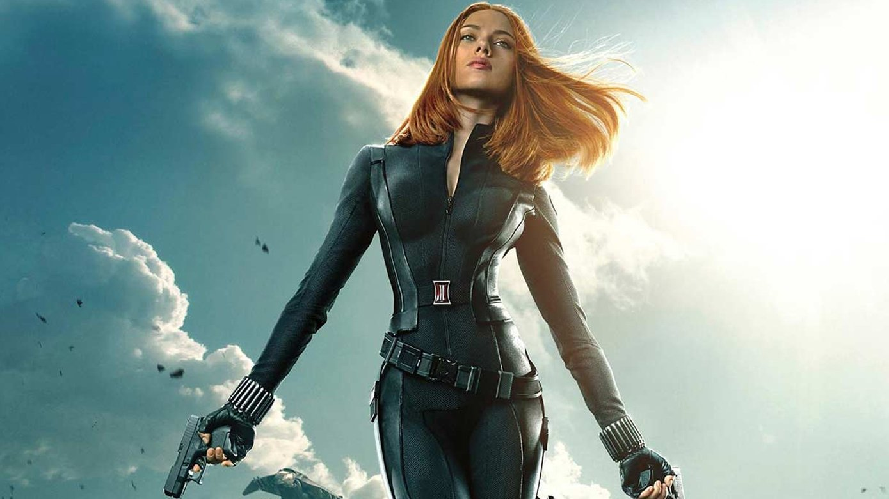

Naturally Curious!!
About Myself
An ordinary girl who loves to live in the world of unlimited imagination of book fantasy!
My Hobbies
1) Reading a fiction book.
2) Dancing.
3) Travelling.
4) Sketching
Favorite Marvel Characters
1) Iron Man

Role played by Robert Downey Junior.
Iron Man is a fictional superhero appearing in American comic books published by Marvel Comics. The character was co-created by writer and editor Stan Lee. A wealthy American business magnate, playboy, and ingenious scientist, Anthony Edward "Tony" Stark suffers a severe chest injury during a kidnapping. When his captors attempt to force him to build a weapon of mass destruction, he instead creates a mechanized suit of armor to save his life and escape captivity. Later, Stark develops his suit, adding weapons and other technological devices he designed through his company, Stark Industries. He uses the suit and successive versions to protect the world as Iron Man. Although at first concealing his true identity, Stark eventually declared that he was, in fact, Iron Man in a public announcement.
Robert Downey Jr.
Robert John Downey Jr. (born April 4, 1965) is an American actor, producer, and singer. His career has been characterized by critical and popular success in his youth, followed by a period of substance abuse and legal troubles, before a resurgence of commercial success in middle age. In 2008, Downey was named by Time magazine among the 100 most influential people in the world, and from 2013 to 2015, he was listed by Forbes as Hollywood's highest-paid actor. His films have grossed over $14.4 billion worldwide, making him the second highest-grossing box-office star of all time.
2) Spider Man

Role played by Tom Holland.
Spider-Man is a fictional superhero created by writer-editor Stan Lee and writer-artist Steve Ditko. He first appeared in the anthology comic book Amazing Fantasy #15 (August 1962) in the Silver Age of Comic Books. Spider-Man is the alias of Peter Parker, an orphan raised by his Aunt May and Uncle Ben in New York City after his parents Richard and Mary Parker were killed in a plane crash. Lee and Ditko had the character deal with the struggles of adolescence and financial issues, and accompanied him with many supporting characters, such as J. Jonah Jameson, Harry Osborn, Max Modell, romantic interests Gwen Stacy and Mary Jane Watson, and foes such as Doctor Octopus, the Green Goblin and Venom. His origin story has him acquiring spider-related abilities after a bite from a radioactive spider; these include clinging to surfaces, shooting spider-webs from wrist-mounted devices, and detecting danger with his "spider-sense".
Tom Holland
>
Thomas Stanley Holland (born 1 June 1996) is an English actor. Holland was born in Kingston upon Thames, London. He has a blue Staffordshire Bull Terrier named Tessa. Along with his three younger brothers, Holland sponsors The Brothers Trust, a UK Registered Charity that raises money for various charitable causes. Holland rose to stardom for playing Peter Parker / Spider-Man in the Marvel Cinematic Universe superhero films Captain America: Civil War (2016), Spider-Man: Homecoming (2017), Avengers: Infinity War (2018), Avengers: Endgame (2019), and Spider-Man: Far From Home (2019).
3) Captain America

Role played by Robert Chris Evans.
Captain America is a fictional superhero appearing in American comic books published by Marvel Comics. Captain America is the alter ego of Steve Rogers, a frail young man enhanced to the peak of human perfection by an experimental serum to aid the United States government's efforts in World War II. Near the end of the war, he was trapped in ice and survived in suspended animation until he was revived in modern times. Although Captain America often struggles to maintain his ideals as a man out of his time, he remains a highly respected figure in his community, which includes becoming the long-time leader of the Avengers.
Chris Evans
Christopher Robert Evans (born June 13, 1981) is an American actor. He first gained attention in 2005 as the Marvel Comics character Human Torch in Fantastic Four (2005) and its 2007 sequel and later gained further worldwide attention for his portrayal of Steve Rogers / Captain America in the Marvel Cinematic Universe, appearing in eleven films including four cameos. His work in the latter film series established him as one of the highest-paid actors in the world.
4) Thor

Role played by Chris Hemsworth.
Thor Odinson is a fictional superhero appearing in American comic books published by Marvel Comics. The character, which is based on the Norse deity of the same name, is the Asgardian god of thunder who possesses the enchanted hammer, Mjolnir, which grants him the ability to fly and manipulate weather amongst his other superhuman attributes. He is a founding member of the superhero team the Avengers, appearing in each volume of that series.
Chris Hemsworth
Christopher Hemsworth (born 11 August 1983) is an Australian actor. He first rose to prominence in Australia playing Kim Hyde in the Australian television series Home and Away (2004 to 07) before beginning a film career in Hollywood. Hemsworth is best known for playing Thor in eight Marvel Cinematic Universe films, beginning with Thor (2011) and appearing most recently in Avengers: Endgame (2019), which established him as one of the leading and highest-paid actors in the world.
5) Black Widow

Role played by Scarlett Johansson. Black Widow is a fictional superhero appearing in American comic books published by Marvel Comics. Created by editor and plotter Stan Lee, scripter Don Rico, and artist Don Heck, the character debuted in Tales of Suspense #52 (April 1964). The character was introduced as a Russian spy, an antagonist of the superhero Iron Man. She later defected to the United States, becoming an agent of the fictional spy agency S.H.I.E.L.D. and a member of the superhero team the Avengers.
Scarlett Johansson
Scarlett Ingrid Johansson (born November 22, 1984) is an American actress and singer. The world's highest-paid actress since 2018, she has made multiple appearances in the Forbes Celebrity 100. Her films have grossed over $14.3 billion worldwide, making Johansson the ninth-highest-grossing box office star of all time. She is the recipient of numerous accolades, including a Tony Award and a BAFTA Award, as well as nominations for two Academy Awards and five Golden Globe Awards. In 2010, Johansson debuted on Broadway in a revival of A View from the Bridge, which won her a Tony Award for Best Featured Actress, and began playing the role of Black Widow in the Marvel Cinematic Universe with Iron Man 2
Wishlist
1) Riding a bike.
2) Going to Disney Land.
3) Writing my own book.
© Himisha Tapadiya